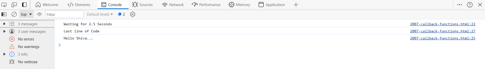
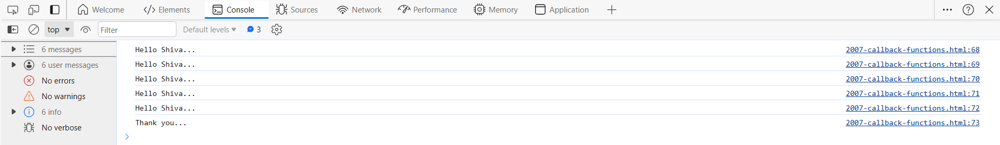

The setTimeout() method calls a function after a number of milliseconds.
1 second = 1000 milliseconds.
The setTimeout() is executed only once.
If you need repeated executions, use setInterval() instead.
Use the clearTimeout() method to prevent the function from starting.
Example:
console.log("Waiting for 2.5 Seconds");
myTimeout = setTimeout(function()
{
console.log("Hello Shiva...");
clearTimeout(myTimeout);
},2500);
console.log("Last line of Code");

The setInterval() method calls a function at specified intervals.
1 second = 1000 milliseconds.
The setInterval() method continues calling the function until clearInterval() is called, or the window is closed.
Use the clearInterval() method to prevent the function at specified intervals.
Example:
let count = 0;
const myInterval = setInterval(function()
{
console.log("Hello Shiva...");
count++;
if (count === 5){
clearInterval(myInterval);
console.log("Thank you...");
}
},2500);
